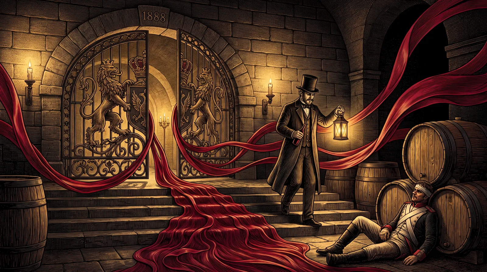

ЧЁРНЫЙ ДОКТОР · ЭКИМ КАРА · СОЛНЕЧНАЯ ДОЛИНА
Чёрный ДокторСолнечной Долины
Эким кара — крымскотатарское имя сорта, в переводе «чёрный доктор». Имя ягоды перешло вину и осталось с ним.

Досье
Раздел I · Досье
Что в бутылке
Выпускается ограниченным тиражом из винограда со старых лоз автохтонных сортов. Ручной сбор винограда. Многолетняя выдержка в дубовых бочках
- Сортовой состав
- Эким кара, кефесия, джеват кара
- Спирт
- 16% об.
- Сахар
- 160 г/дм³
- Объём
- 0,25; 0,375; 0,7; 0,75; 1,4 л.
- Подача
- 16–18 °С
- Бокал
- Небольшой тюльпанообразный бокал для креплёных вин
Дегустационная нота
- Цвет
- Гранатовый с рубиновыми бликами
- Букет
- Сложный, многогранный. С преобладающими тонами сухофруктов и джемов. Яркие тона чернослива, шоколада, замши, которые дополняются оттенками ванили, кизила, тёрна, пряностей
- Вкус
- Идеальный баланс мягкости и свежести. Плотное и мощное вино с отличной структурой — шелковистыми танинами и аккуратной алкогольной теплотой в долгом послевкусии. Полный, бархатистый, с выраженными оттенками сушёной груши, молочных сливок, сафьяна
- Гастрономия
- Вино не требующее гастрономического сопровождения. При желании, дегустацию «Чёрного Доктора Солнечной Долины» можно дополнить чёрным шоколадом или десертом на его основе, сладковатыми орешками (фундук, кешью), сырами с голубой плесенью
Раздел II · Имя сорта
Эким кара — «чёрный доктор» на крымскотатарском
Имя сорту дали в долине задолго до винодельни. Крымскотатарское «эким кара» переводится как «чёрный доктор» — так называли почти чернильную ягоду. Название закрепилось за вином и пережило все смены хозяев долины — от князя Горчакова и управляющего Льва Голицына до сегодняшнего дня.
Сорт растёт только здесь: старые лозы эким кара растут только на сланцевых склонах между Судаком и Меганомом. Купаж «Чёрного Доктора» известен точно — эким кара 75 %, джеват кара 10 %, кефесия 15 %, возраст лоз свыше 35 лет. Виноград собирают вручную, вино выпускается ограниченным тиражом и годами выдерживается в дубовых бочках в голицынских подвалах Архадерессе.
В феврале 2026 года «Винный гид России» Роскачества поставил «Чёрному Доктору» 90,8 балла, а «Чёрному Полковнику» — 90,9: впервые за шесть лет сразу два креплёных вина превысили порог в 90 баллов, и оба они из этой долины.
Эти вина по-своему легендарны. Дело не только в длительной истории их производства, но и в уникальных сортах винограда, из которых они изготовлены.Олеся Латышева · Роскачество, «Винный гид России — 2026»
Слово «доктор» здесь — только перевод исторического имени сорта. Вино не обладает лечебными свойствами; чрезмерное употребление алкоголя вредит вашему здоровью.

Раздел III · Архив выпусков
Годы, которые дом сохранил
Все релизы марки, которые дом показывает в каталоге сегодня — 4.
- Базовый 16% об. · 160 г/дм³ Эта карточка
- 2000 Коллекция · 0,75 л. 16% об. · 160 г/дм³ Открыть карточку
- 2001 Коллекция · 0,75 л. 16% об. · 160 г/дм³ Открыть карточку
- 2013 Хеопс · 0,75 л. 16% об. · 160 г/дм³ Открыть карточку
Раздел IV · Визит
Легенду наливают в подвале.
Экскурсия по трём голицынским подвалам и дегустация 10 марок вин — 1 час 20 минут, от 1 450 ₽ за гостя. Начало в 10:00, 11:00, 13:00, 14:00, 15:00, 16:00 ежедневно; в 20:00 — дегустация при свечах по предварительной заявке.
с 10:00 до 17:00 без выходных · с. Миндальное, ул. Миндальная, 8А, дегустационный зал «Архадерессе»